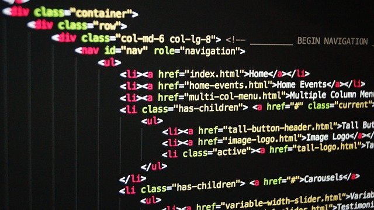

What do you need to be a web developer?

If you are serious about building a career for yourself as an experienced web developer,
then you need to make sure that you start with a clear vision of how you are going to achieve this.
The following steps should help guide you:
Start by deciding what sort of developer you want to become.
The languages and techniques that you learn will depend on whether you want to focus on front or back-end development, to begin with.
Choose a decent course.
Next, you need to choose a course or a couple of courses that will teach you the basics of web development.
To get high-quality courses, I'd suggest you head to
Gomycode and check their courses out.
Create a learning plan.
Everyone needs a bit of motivation from time to time, otherwise, we simply don’t do the things that we need to.
As you start on your journey towards understanding what is a web developer, you need to start building a bit of a learning schedule.
Set aside a certain amount of hours per week for your courses, and make sure that you set yourself realistic goals.
As you can see, it isn’t that hard to become a web developer. Sure, it will take a lot of time, effort, and work, but you can do it if you want.
Once you have come to a clear understanding of ‘what is web development’ and ‘what does a web developer do’ it will only get easier.